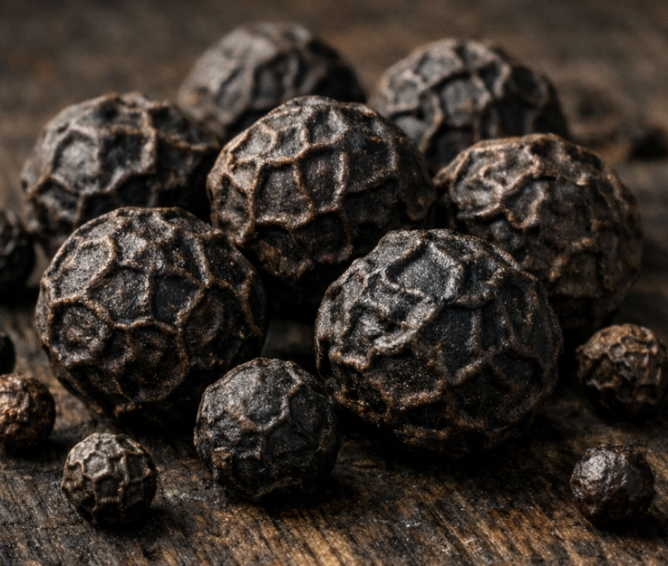
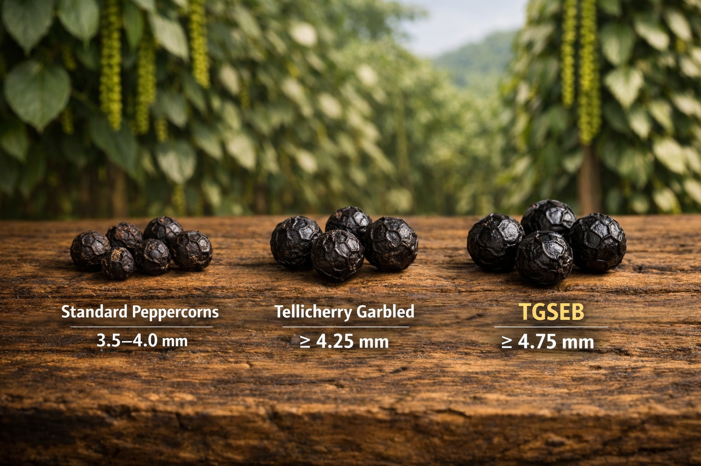
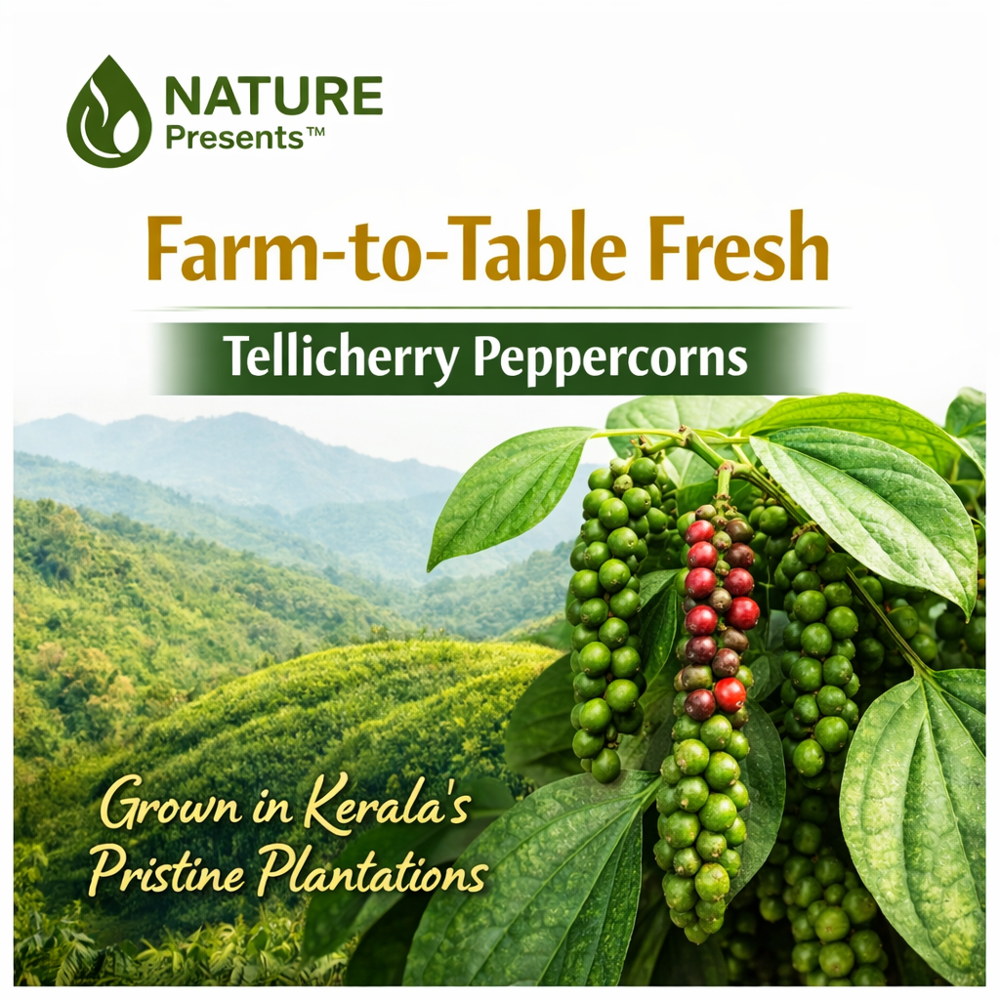
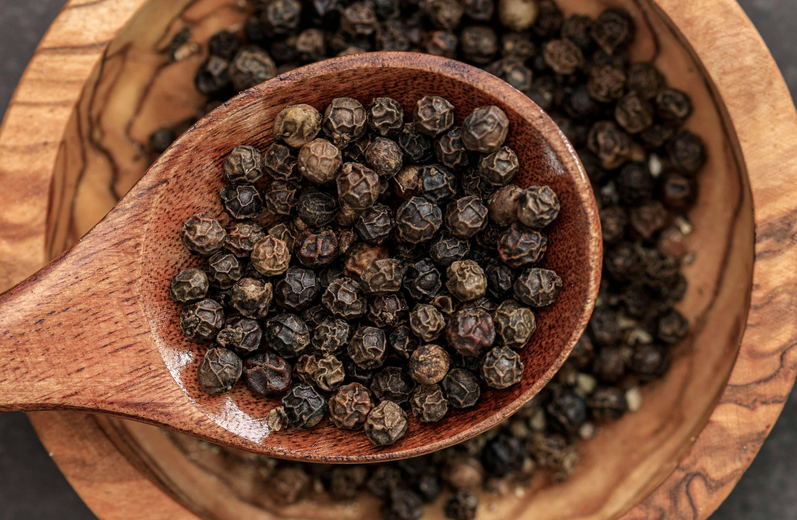

The largest, boldest grade of Indian black pepper. Hand-graded berries of 4.75 mm and above — the top few percent of the harvest, left on the vine longer to develop deeper, more complex flavour.
Buy on naturepresents.in →Also available on Amazon.in · Shipped across India by Nature Presents

All black pepper is Piper nigrum. What separates TGSEB is selection: berry size is a proxy for ripeness, and ripeness is where aroma lives. Shown below at true relative scale.
Why size matters: berries that grow to 4.75 mm+ stayed on the vine longer. The extra ripening builds more volatile oils — the compounds behind pepper's citrus, pine and floral notes. In a typical harvest, only a small fraction of berries make this grade.

Nearly half again the size of ordinary pepper — and size is not cosmetic. Bigger berries ripened longer and carry more of the oils that give pepper its aroma.
"Garbled" is the trade term for cleaned and sorted: light berries, pinheads, stalks and dust removed. You pay for pepper, not filler.
Grown in the pepper heartland that made "Tellicherry" the most sought-after name in pepper for over two centuries.
The familiar warmth of black pepper, wrapped in citrus, pine and floral notes you won't find in a supermarket jar. Read the full grading guide →
Cooking heat destroys exactly the aromatics you're paying a premium for. Use the good pepper where those aromatics reach your nose.
A typical grind uses well under half a gram — a 100 g pouch delivers a few hundred servings, so the upgrade costs paise per meal. Full comparison: Tellicherry vs regular black pepper →

Thalassery — anglicised as Tellicherry — was the Kerala port from which the finest Malabar pepper shipped for centuries. The name became a promise: the largest, ripest berries of the harvest, sorted and sold at a premium.
Our TGSEB is sourced from the same coast, sun-dried, garbled and size-graded, then packed whole so the volatile oils stay sealed inside the berry until the moment you grind.

Whole TGSEB berries · freshly cracked
Whole TGSEB Tellicherry peppercorns — packed fresh, sealed airtight, shipped across India.